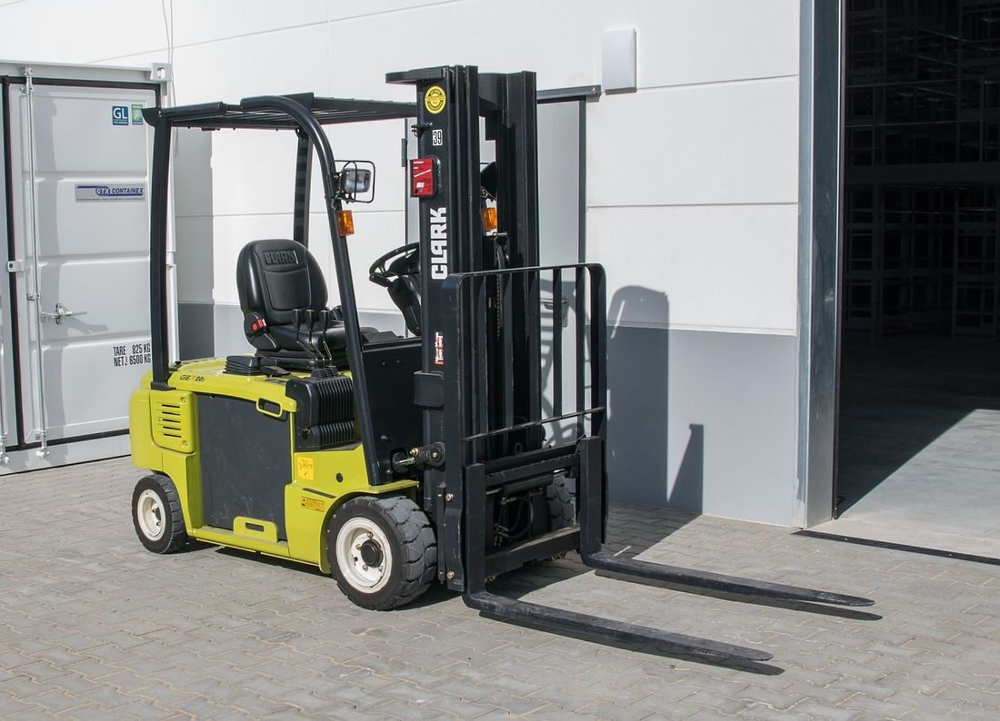

Местный производитель оборудования для молочно-товарных ферм
ТОО «EFIM FARM TECHNOLOGIES» — с 2017 года в сфере производства и поставки оборудования для животноводства в Республике Казахстан.
ТОО «EFIM FARM TECHNOLOGIES» с 2017 года осуществляет деятельность в сфере производства и поставки оборудования для животноводства на территории Республики Казахстан. Компания специализируется на комплексном оснащении молочно-товарных ферм и реализует проекты во всех регионах страны.
Производственная база предприятия расположена в Казахстане и включает более 3000 кв. м производственных площадей, оснащённых современным металлообрабатывающим оборудованием. В компании работают 40 специалистов, действует собственная сервисная и логистическая служба, внедрена система контроля производственных процессов.
Что мы производим
Основным направлением деятельности является производство оборудования для содержания крупного рогатого скота. В ассортименте компании — более 100 наименований продукции, включая стойловое оборудование, каркасы доильных залов, ограждения кормовых столов, поилки с подогревом, хэдлоки, скреперные системы, ветеринарные станки, оборудование для содержания телят и многое другое.
Локализация
В рамках развития отечественного агропромышленного комплекса и политики импортозамещения ТОО «EFIM FARM TECHNOLOGIES» в 2024–2027 годах реализует программу локализации производства оборудования FARESIN, EISELE и DAIRYMASTER. На сегодняшний день уровень локализации достигает 30% и включает производство металлоконструкций, изготовление отдельных узлов и адаптацию оборудования под условия эксплуатации в Казахстане.
Сервис
Компания уделяет особое внимание качеству сервиса и техническому сопровождению. Клиентам предоставляется полное гарантийное и постгарантийное обслуживание, обеспечивается наличие запасных частей и техническая поддержка на всех этапах эксплуатации оборудования.
Результаты
С 2017 года ТОО «EFIM FARM TECHNOLOGIES» реализовало более 200 проектов по оснащению молочно-товарных ферм. Общий объём поставленного оборудования превысил 45 млрд тенге. Проекты компании успешно реализованы во всех областях Казахстана.
Сегодня ТОО «EFIM FARM TECHNOLOGIES» является одним из отечественных производителей оборудования для животноводства, вносящих вклад в развитие агропромышленного комплекса Республики Казахстан, создание рабочих мест и внедрение современных технологий в сельском хозяйстве.
Как мы работаем




Нужно оборудование для фермы?
Подберём решение под ваше поголовье и пришлём коммерческое предложение.